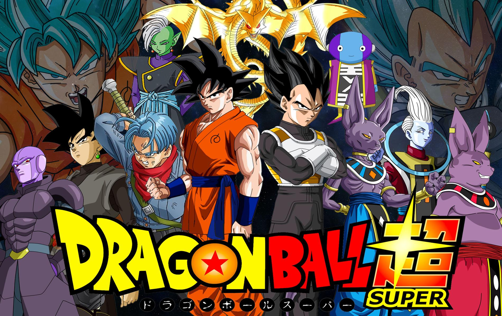

Welcome to Anime Hub!
Can't Find an Anime in Which You Can Start With? Try Looking Through Our Recomendations of the Best Anime in Each Genre!
About
Naruto (NARUTO -ナルト-) is a manga by Masashi Kishimoto with an anime TV series adaptation. Its main character, Naruto Uzumaki, is a loud, hyperactive, adolescent ninja who constantly searches for approval and recognition, as well as to become Hokage, who is acknowledged as the leader and strongest of all ninja in the village.
The manga was first published by Shueisha in 1999 in the 43rd issue of Japan's Shōnen Jump magazine. VIZ Media publishes a translated version in the American Shonen Jump, and is currently within a few volumes of the Japanese publication. Naruto has become VIZ Media's best-selling manga series.[1]
The anime series, produced by Studio Pierrot and Aniplex, premiered across Japan on the terrestrial TV Tokyo network and the anime satellite television network Animax on October 3, 2002, and is still being aired. Viz also licensed the anime for North American production. Naruto debuted in the United States on Cartoon Network's Toonami programming block on September 10, 2005, and in Canada on YTV's Bionix on September 16, 2005. Naruto began showing in the UK on Jetix on July 22, 2006. It began showing on Toasted TV on January 12, 2007 in Australia, although it could be watched on Cartoon Network in 2006. The first series lasted nine seasons, while the second began its first on February 15, 2007.
In November 22, 2012, VP of Strategic Marketing and Promotions for Cartoon Network, Jason DeMarco, announced Naruto would make a come back to Toonami, now a block on Adult Swim on Saturday, December 1, 2012. Additionally, they mentioned that it would be uncut and the time would be 12:30 a.m. est. The show started all the way back at episode 1 and was removed from the schedule after episode 52.
About
Bleach (Japanese: ブリーチ Hepburn: Burīchi) is a Japanese anime television series based on Tite Kubo's manga of the same name. The series ran for a total of 366 episodes. Bleach was produced by Studio Pierrot and directed by Noriyuki Abe. Bleach's Japanese and English voice actors include some of the most credited and well known voice actors, including Masakazu Morita and Johnny Yong Bosch. The music was composed by Shirō Sagisu, who also composed the music for Neon Genesis Evangelion. A total of fifteen opening themes and thirty ending themes were used throughout the series, featuring a diverse group of Japanese artists.
Bleach follows the adventures of Ichigo Kurosaki after he obtains the powers of a Soul Reaper (死神 Shinigami, literally, "Death God") — a death personification similar to the Grim Reaper — from another Soul Reaper, Rukia Kuchiki. His newfound powers force him to take on the duties of defending humans from evil spirits and guiding departed souls to the afterlife. The anime adaptation includes original storylines not found in the manga; including repeated appearances and stories containing these original characters. Studio Pierrot produced the series from 2004 to 2012, consisting of 366 episodes. Viz Media obtained foreign television and home video distribution rights to the Bleach anime on March 15, 2004. Cartoon Network's Adult Swim block began airing Bleach in the United States on September 9, 2006. The series' international release extends through dozens of countries in several languages, such as Spanish, French, German, Brazilian Portuguese and Tagalog.

Dragon Ball Super (Japanese: ドラゴンボール超スーパー Hepburn: Doragon Bōru Sūpā) is an ongoing Japanese anime television series produced by Toei Animation that began airing on July 5, 2015.[1] Its overall plot outline is written by Dragon Ball franchise creator Akira Toriyama, while the individual episodes are written by different screenwriters. It is also a manga series illustrated by Toyotarou, serialized in Shueisha's shōnen manga magazine V Jump. The anime is a sequel to Toriyama's original Dragon Ball manga and the Dragon Ball Z television series featuring the first new storyline in 18 years. It is broadcast on Sundays at 9:00 a.m. on Fuji TV.[2]
Dragon Ball Super follows the adventures of the protagonist Goku after defeating Majin Buu and bringing peace to Earth once again. Goku encounters beings far more powerful yet and attains the power of a god. He defends the Earth against the powerful destructive deities and travels to other universes to face more powerful opponents and nearly unstoppable foes while learning his newly discovered powers under the gods of the universe.

About
My Hero Academia (Japanese: 僕のヒーローアカデミア Hepburn: Boku no Hīrō Akademia) is a action adventure manga series written and illustrated by Kōhei Horikoshi. It has been serialized in Weekly Shōnen Jump since July 2014, and 16 volumes have been collected in tankōbon format. The series has been licensed for English-language release by Viz Media, and began serialization in their weekly digital manga anthology Weekly Shonen Jump on February 9, 2015.
The story follows Izuku Midoriya, a boy born without superpowers in a world where they are the norm, but who still dreams of becoming a superhero himself, and is scouted by the world's greatest hero who shares his powers with Izuku after recognizing his value and enrolls him in a high school for heroes in training. The manga was adapted into an anime television series; the first season aired from April 3 to June 26, 2016. The second season aired from April 1 to September 30, 2017. A third season has been announced, to start airing in April 2018,[9] as well as an animated film for 2018.